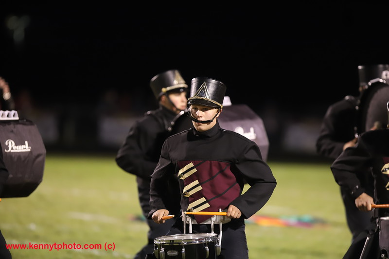

My name is Patrick Ramey and I am a sophomore at Licking Heights High School. I am currently 15 years old. I was born on August 22, 2004 in Grant Hospital. I have many hobbies. I like playing video games and playing football but there's one hobby that I like and enjoy more than any other hobby and that's drumming. I've been playing the drums for about four years now and I enjoy doing it. As of now, I am in the Licking Heights Symphonic and Marching band. In symphonic band I play many different percussion instruments. In marching band I'm on bass four. Honestly, playing the drums and being in band has helped me develop a lot of skills and it can calm me down when I'm mad or upset. Drumming has played a big role in the past four years and I can't wait to continue playing.
